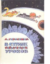

В стране невыученных уроков

Приключения школьника, учившегося на двойки и не аккуратно обращающегося со своими учебниками, который попал в страну собственных ошибок. Именно в этой книжке было "полтора землекопа", плотоядная корова и знаменитая фраза "казнить нельзя помиловать", в которой Витя Перестукин правильно поставил запятую и сохранил себе жизнь.